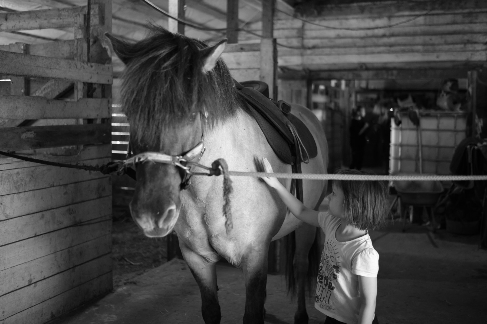
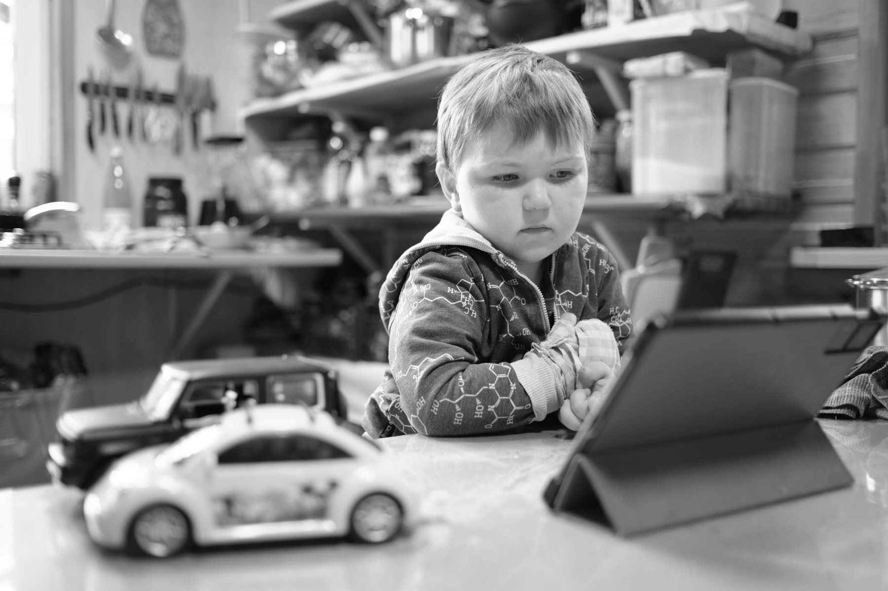
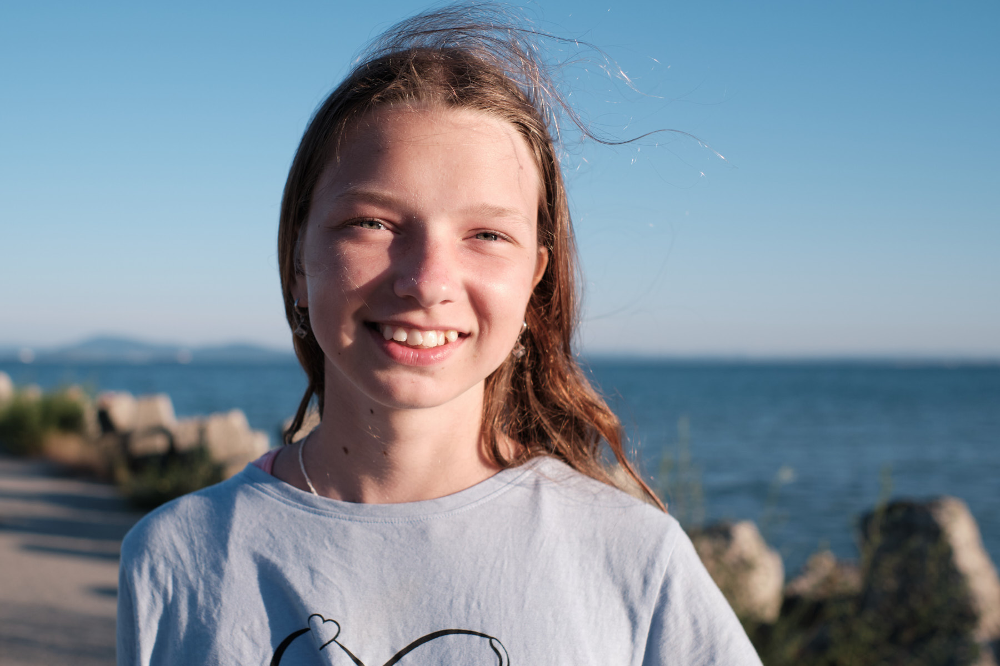
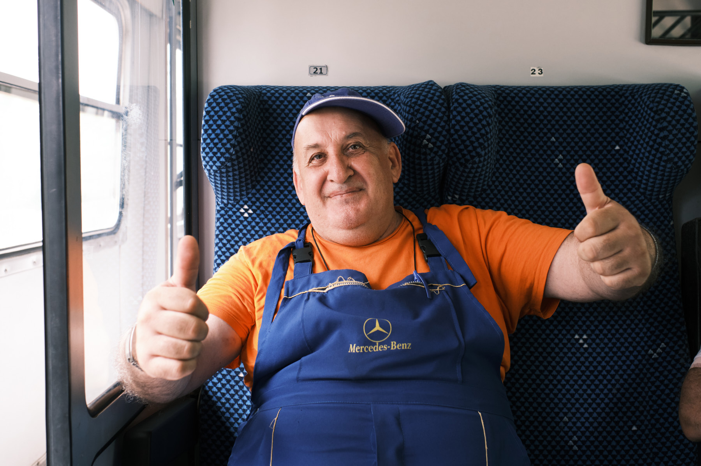
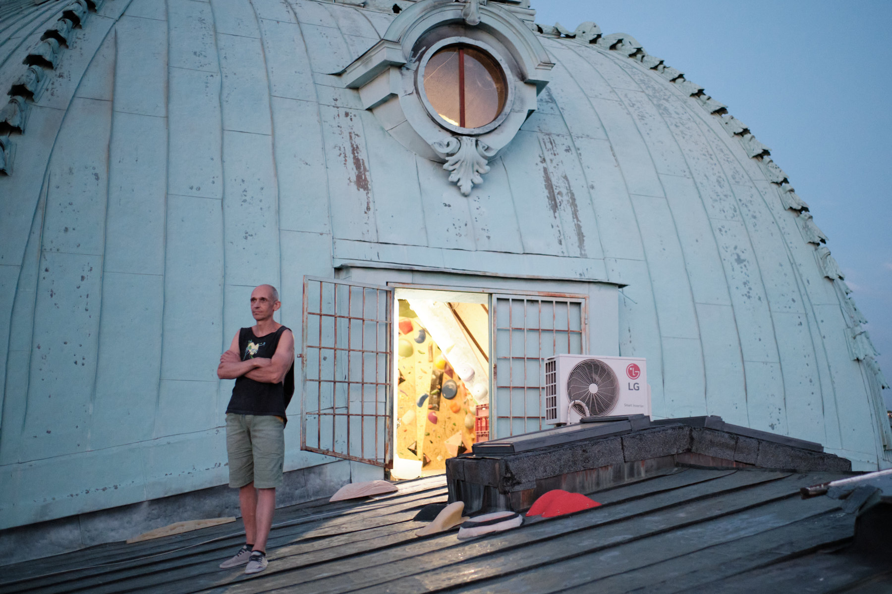
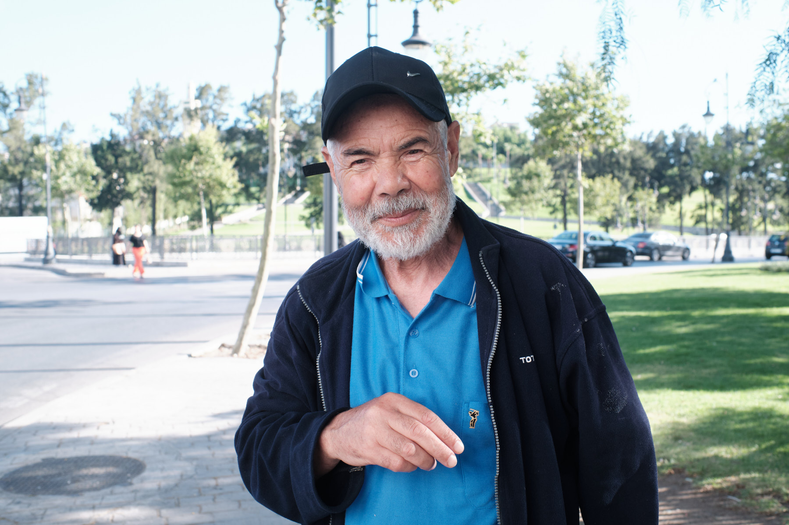
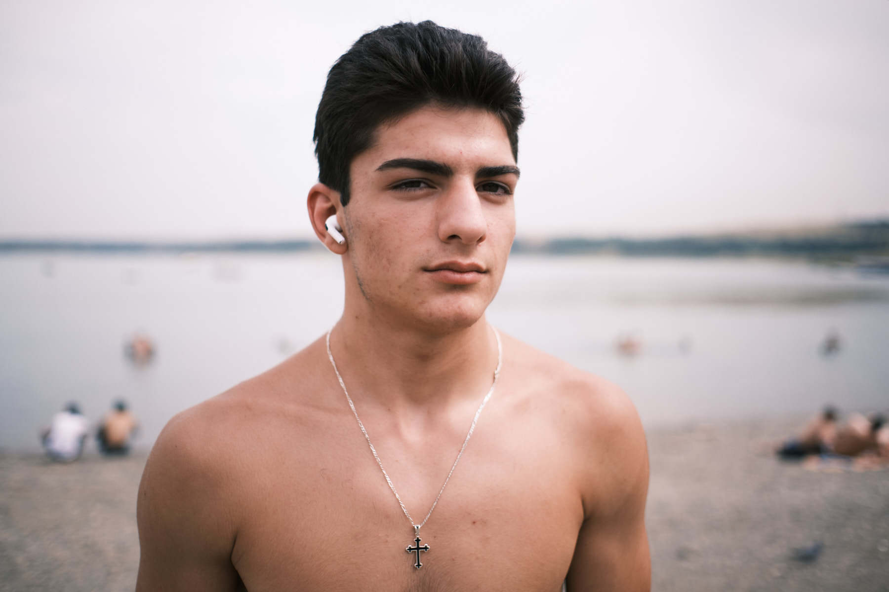
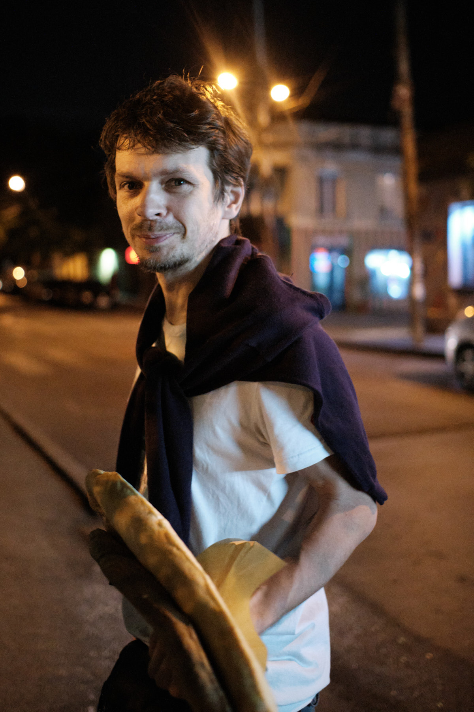

Project / Documentary
A three-month overland journey through Russia, Georgia, Uzbekistan, Turkey, Germany, Bulgaria, and Morocco. Strangers, hosts, fellow travelers — faces met once and never again. The photographs that became the ZINE.







